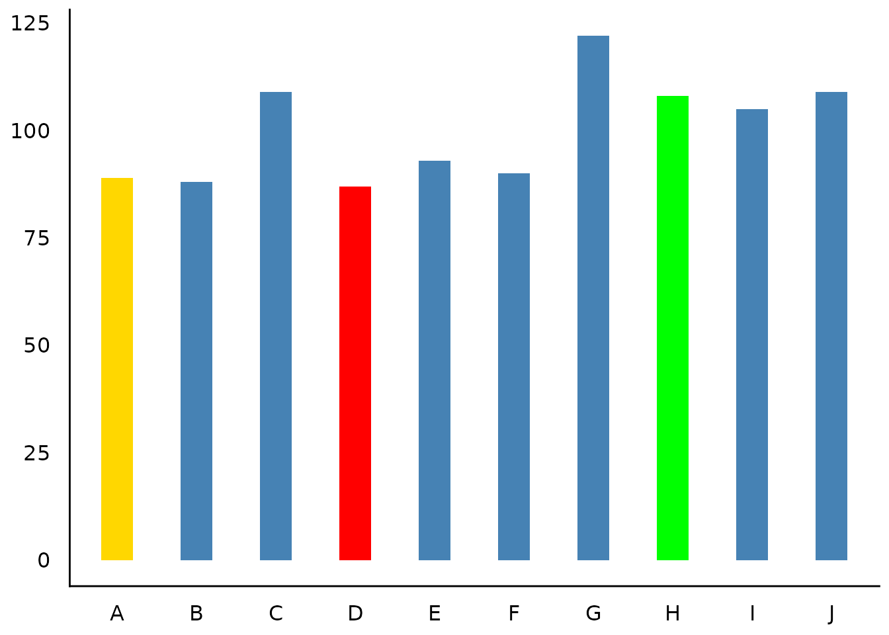

This vignette can be referred to by citing the package:
citation("see")
#> To cite package 'see' in publications use:
#>
#> Lüdecke et al., (2021). see: An R Package for Visualizing Statistical
#> Models. Journal of Open Source Software, 6(64), 3393.
#> https://doi.org/10.21105/joss.03393
#>
#> A BibTeX entry for LaTeX users is
#>
#> @Article{,
#> title = {{see}: An {R} Package for Visualizing Statistical Models},
#> author = {Daniel Lüdecke and Indrajeet Patil and Mattan S. Ben-Shachar and Brenton M. Wiernik and Philip Waggoner and Dominique Makowski},
#> journal = {Journal of Open Source Software},
#> year = {2021},
#> volume = {6},
#> number = {64},
#> pages = {3393},
#> doi = {10.21105/joss.03393},
#> }Introduction
datawizard is a lightweight package to easily manipulate, clean, transform, and prepare your data for analysis. Most courses and tutorials about statistical modeling assume that you are working with a clean and tidy dataset. In practice, however, a major part of doing statistical modeling is preparing your data-cleaning up values, creating new columns, reshaping the dataset, or transforming some variables. datawizard provides easy to use tools to perform these common, critical, and sometimes tedious data preparation tasks.
For more, see: https://easystats.github.io/datawizard/
Description of Variable Distributions
(related function documentation)
Histogram for Numbers with Fractional Part
data(iris)
result <- describe_distribution(iris$Sepal.Length)
result
#> Mean | SD | IQR | Range | Skewness | Kurtosis | n | n_Missing
#> -------------------------------------------------------------------------
#> 5.84 | 0.83 | 1.30 | [4.30, 7.90] | 0.31 | -0.55 | 150 | 0
plot(result)
Thin Bars for Integer Values
set.seed(333)
x <- sample(1:100, 1000, replace = TRUE)
result <- describe_distribution(x)
result
#> Mean | SD | IQR | Range | Skewness | Kurtosis | n | n_Missing
#> -------------------------------------------------------------------------------
#> 50.18 | 28.66 | 48.75 | [1.00, 100.00] | 0.02 | -1.16 | 1000 | 0
plot(result)

Highlighting Categories
set.seed(123)
result <- describe_distribution(sample(LETTERS[1:10], 1000, TRUE))
# highlight one category
plot(result, highlight = "D")
# own color scales - pass a named vector to 'scale_fill_manual()'
# the name of the non-highlighted color is "no_highlight".
plot(result, highlight = c("D", "H", "A"), size_bar = 0.4) +
scale_fill_manual(values = c(D = "red", H = "green", A = "gold", no_highlight = "steelblue"))